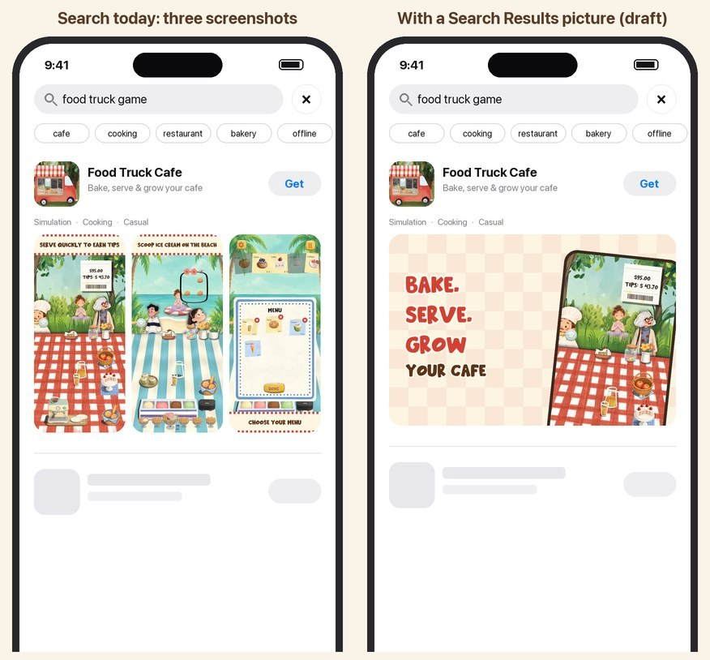
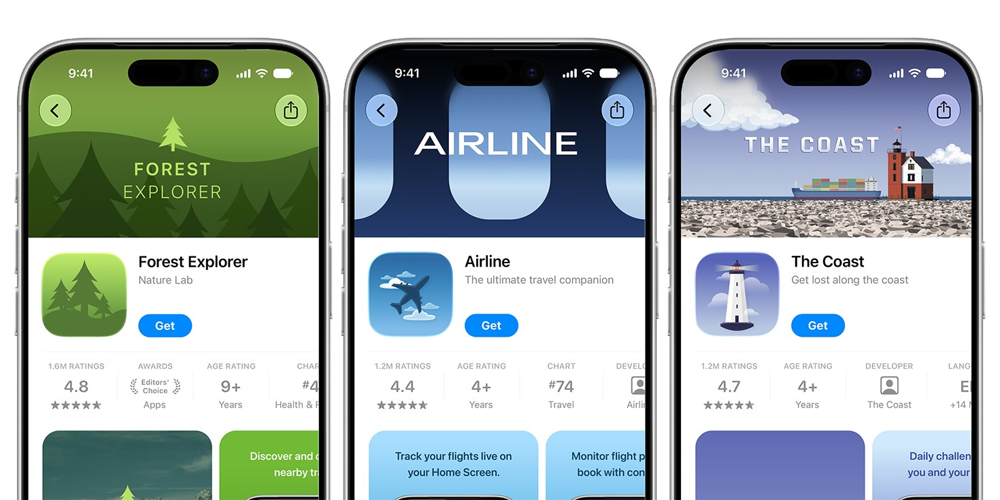

Food Truck Cafe
21 November. 2026.11.20 is live on the App Store; test build 2026.11.21 (1) is in TestFlight.
1Next
You
Test build 2026.11.23 (0) is in TestFlight (ready 09:45).
Before the release, read Current: the scan found four small bugs (fixed, not in build 0) and a list of things for you to decide or test. A build (1) with the fixes waits for your tick or word.
Q&A: Header and Search Results, with pictures of both and drafts for our page.
New tab, Mechanisms: the sale prices and kitchen times live there now, for good.
Still open: the three ad choices (Analysis); the C chapter tab.
Me
The release itself (version, What's New, submission) waits for your yes.
C chapter: your reference picture goes on its tab and ChatGPT gets a brief built on it.
Early December: look at Unity's Finance page for November's balance.
2Q&A
Header and Search Results: what does a player see with and without them? (23 Nov)
- What they are: two optional pictures (or silent looping videos, 5 to 30 s) Apple added this autumn. Only iPhones and iPads on iOS 27 show them. Each can be added or left empty on its own.
- Header, with: a banner above our icon, name and Get button, about a third of the first screen. Nothing is taken away; the screenshots move down. Without (today): the page starts with the icon and name, the screenshots show higher up.
- Search Results, with: one wide picture replaces our three screenshots in the search list. Without (today): search shows our first three screenshots, as now.





- Real pages with and without: I cannot capture them from the Mac: Apple's web store does not show these slots, only the App Store app on iOS 27. On your iPhone, search any big game: a result with one wide picture has the search slot filled, one with three screenshots has not; open a game and a banner above the icon is its header.
- An upright iPhone shows only the middle of the header (the picture is very wide, 21:9); the truck and name must sit in the middle, as in the draft.
- My view: a Header only adds, so it is worth one good picture when there is time. The Search Results picture is a trade: one picture instead of three screenshots that already show the game well; I would leave it empty, or try it later with Apple's A/B test.
- Not needed for today's release. Both can be added any day without a new version (Apple reviews the picture alone).
3Current
23 November. Test build 2026.11.23 (0) is in TestFlight; the four fixes below are not in it.
Scan of everything changed since release 2026.11.20 (two readers: I read the kitchen, tutorial, flowers and orders; a second reader the saves, map and shop).
Saves: no way found for an updating player to lose progress, get stuck or see a wrong day (traced for 0 to 8, 9 to 11, 12, 13 to 27 and all 28 days done). Read from the code, not run on a device.
Fixed, four small bugs (compiled; need one more build):
- Gift card: the line "Extra patience flower for beach customers" showed, vanished, then faded in. My slip when the words changed.
- Oven picker: while a choux or cake batch is still at the mixer or the board the oven refuses a second one, but its note looked pickable and a tap did nothing. It is greyed now.
- Map: tapping the chapter arrow in the first half second could bring up today's day card over the other chapter's page.
- Journal: with chapter 2 open after day 9, a page earned there got the wrong day (a first ice cream on day 13 was filed as day 10).
For you to decide or test (nothing changed):
- This release is not small. It holds the new kitchen flow, chapter 2 opening after day 9, the thinking time and the fourth flower. Worth testing on the phone: updating over the App Store copy with your own save, the day 9 star, the chapter 2 tutorial with the gift, a choux and a cake through the kitchen with a pause and a restart in the middle.
- Thinking dots and difficulty: every customer now takes 2 s before anything can be served. Live players do not have this yet, and the star rule (3 stars = every customer served) was not measured again with it. Your "chapter 2 is much harder" came from a build that had it.
- Day 9 star can be missed: a player who never taps the glowing day 9 and plays on to day 12 never gets the scene or its extra star.
- After the day 9 star is taken, day 9 keeps bouncing and the truck stays at the arrow until the map is opened again.
- Players already in chapter 2 get the fourth flower without the gift card (they have done that tutorial).
- Updating players' kitchens: the new tray and mixer take a free place on the counter as they arranged it; on a full counter they go to the opening under it. Not tried with a full counter.
- Sounds: if the day ends with a dessert half made, the mixer or knife sound may still play a few seconds later. Not confirmed.
4MVP
Next release: the kitchen remodel and the small fixes. Everything changed since release 2026.11.20:
- Kitchen flow: choux and cake are made in steps. The oven bakes them onto the baking tray or the cake plate in the kitchen, the mixer adds the cream, the fruit board adds the fruit, then they fly to the table. The kitchen does every step by itself, with no pause.
- New kitchen pieces: the baking tray (four choux, two by two, four stages, with a shadow), the cake plate's stages (empty, sponge, cream, finished), the lean handheld mixer with its bowl and the kitchen's whisk as its blade (at rest and running). All can be arranged; the tray starts on the kitchen table and always lies fully on its top.
- Kitchen times: bread bakes 5 s; choux, cake and cookies 3 s. The ice cream blender runs 3 s (1.8 s with two flavours). Pausing the game stops the kitchen too.
- Chapter 2 opens after day 9 of chapter 1 (the player chooses when to go). On the map day 9 is a big glowing star with a dotted path to the arrow; finishing it gives a star and the truck drives to chapter 2.
- Chapter 2, first day: every ice cream is a waffle bowl with one or two scoops; normal orders from the second day.
- Chapter 2 gift: a fourth patience flower for every chapter 2 customer; in the tutorial a reward card shows it and it flies to the first customer.
- Map: today's day card opens by itself.
- Customers: they think for 2 s (three dots in the middle of the bubble) before the order shows.
- Tutorial: the pointer is a hand cookie with a gold glaze glow.
- Shop: NEW on a tab that holds something new; locked items stay visible with a padlock (cookies and coconut until chapter 2, the star Yoga until she is hired); two new locked star cards, Chef (20) and Dining table (25); cards aligned; the extra cup reads "One more plate for brewed coffee."
- Look: a taller hen on the table; the tutorial's "Ready to go?" card on paper with cookie buttons.
Since test build 2026.11.21 (1): pull handles 12 % bigger; the shop's EARNED line in the Daily Treats letters; the chapter 2 tutorial waits for a tap on the blender; the tutorial hand moves up and down; no arrange banner in the chapter 2 tutorial; the mixer set larger, its whisk deeper in the cream and kept wide while it turns. All of it is in test build 2026.11.23 (0). After it: the four small fixes of the scan (Current).
Not in yet: the chapter 2 tuning (your picks); a sound for the day 9 scene.
5Backlog
Nothing open.
6Analysis
Players, 22 and 23 November (everything since the evening of 21 November; times are ours; read 23 November, about 9:00).
- 8 new players, all from Asia (Philippines 2, China 2, Vietnam, Cambodia, Pakistan, Indonesia): opened 8, started the tutorial 7, finished it 5, finished day 1: 4, went on to day 2: 1.
- Day 1, the same picture as before: three of the four got 2 stars and left within a minute or two of the day's end; the one who got 3 stars stayed. Over the last three days: 7 new players finished day 1; the 5 with 2 stars all left right there, the 2 with 3 stars both played on into chapter 2. The first between-days ad plays at that same moment.
- A second keen player (Philippines, new on 23 Nov, 01:21 to 05:42 in four visits): days 1 to 12, 3 stars on eleven of them, 23 things bought (all foods, all staff, both ovens, two star cards, cookies, coconut, ice cream upgrade), now on day 13, chapter 2's first day. Ads worked in every visit: 12 between-days ads (2 watched to the end, 10 skipped) and 1 Daily Treat ad.
- The US player finished the game: a third visit on 21 Nov, 17:44 to 18:10: days 23 to 28, 3 stars on each. About an hour and a half of play for all 28 days. Not seen since.
- Their ads again: in that third visit Unity got no ad request at all from them (none in those two hours), like in their first visit. So two of their three visits had no ads; only the second showed them (8). This fits ads failing to start on some launches and the game not trying again. At US ad prices those two visits were worth more than a normal day of ours.
- Chapter 2 is still too hard for the Indonesian player (an older version): back on 22 Nov, 0 stars on day 17, 0 stars on day 13, left day 13 half way.
- Other returns: a US player on an older version played half an hour on 21 Nov evening: days 1 to 6 with 0 stars each, then day 1 ten more times (1 to 3 stars). A Malaysian player came back, watched a Daily Treat ad to the end and played day 2 twice (2 stars). A new Pakistani player finished the tutorial, watched a Daily Treat ad, and did not start day 1.
- Unity Ads (UTC days): 22 Nov: 13 requests, 9 shown, $0.12. 23 Nov so far: 52 requests, 17 shown, $0.01: ads shown in the Philippines pay under a tenth of US ones. Last seven days: $0.57.
- Downloads (Apple, first time): 21 Nov 6, 22 Nov 8; the seven days to 22 Nov: 59 (37 the week before). No purchase yet (no Remove Ads, no Stars).
What I would do (the first two got stronger with these two days):
7Marketing
Nothing open.